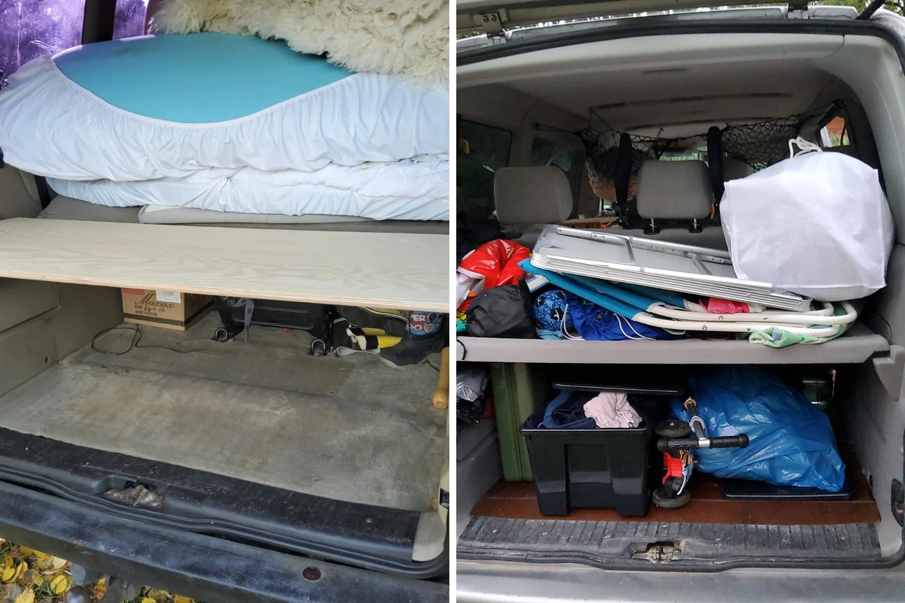

Mehr Stauraum im Kofferraum — mein einfaches Regal im roten T4

Der Kofferraum eines T4 sieht groß aus — bis Bettzeug, Werkzeug, Vorräte, Tisch und Campingkram darin liegen. Ohne Struktur stapelt man alles übereinander. Natürlich braucht man dann immer genau die Kiste, die ganz unten steht. Meine Lösung war erstaunlich einfach: eine zusätzliche Ebene im Heck.
Aus Höhe wird Stauraum
Auf dem ersten Foto sieht man die neue Holzplatte noch fast leer. Sie teilt den Kofferraum in zwei Bereiche. Oben bleibt Platz für größere und leichtere Dinge, unten können Kisten, Werkzeug und Ausrüstung stehen. Dadurch nutze ich nicht nur den Boden, sondern endlich auch die Höhe.
Das zweite Foto zeigt die Realität nach dem Einräumen. Es ist kein Hochglanz-Ausbau und keine perfekt sortierte Ausstellung. Es ist ein echter Reisekofferraum. Aber die Dinge liegen nicht mehr alle in einem einzigen Haufen, und ich komme deutlich schneller an das heran, was ich brauche.
Meine Regeln fürs Packen im Heck
- Schwere Gegenstände möglichst tief und nah an einer stabilen Begrenzung.
- Häufig benötigte Dinge bleiben ohne komplettes Ausräumen erreichbar.
- Leichte, sperrige Sachen dürfen auf die obere Ebene.
- Lose Teile werden für die Fahrt gesichert.
- Notfallausrüstung darf niemals hinter dem halben Haus verschwinden.
Warum dieser kleine Umbau so viel verändert hat
Auf Reisen räumt man ständig: schlafen, kochen, fahren, einkaufen, wieder schlafen. Jede unnötige Suchaktion kostet Zeit und Nerven. Mit der zweiten Ebene konnte ich schneller vom Fahrmodus in den Wohnmodus wechseln. Und genau das macht im Alltag mehr aus als irgendein besonders schickes Detail.
Mein Regal war schlicht, aber es passte zu meinem Roten und zu meiner Art zu reisen. Van-Ausbau bedeutet für mich nicht, möglichst viel einzubauen. Es bedeutet, die eigenen Probleme so zu lösen, dass das Leben unterwegs leichter wird.
Bis bald und immer gute Fahrt,
eure Tussy 💛